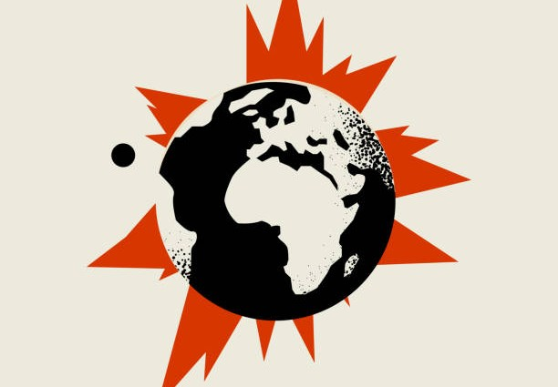

Kwantyl 0,999 to centralny parametr bazylejskiego systemu bezpieczeństwa. W dokumentach nadzorczych interpretuje się go wprost: strata, którą pokrywa kapitał, może zostać przekroczona średnio raz na tysiąc lat. Sformułowanie to powtarzają podręczniki i praktyka – zwykle bez dalszego komentarza.
Dla praktyka to zdanie jest jednocześnie wygodne i niepokojące. Wygodne, bo zamienia abstrakcyjny kwantyl w obraz, który łatwo przedstawić zarządowi. Niepokojące, bo żaden bank nie ma danych z tysiąca lat – a często nie ma ich nawet z jednego pełnego cyklu koniunkturalnego.
Liczba, której nie da się sprawdzić
Jeśli zdarzenie ma występować raz na tysiąc lat, nie da się go zweryfikować na historii. Kwantyl tak daleko w ogonie jest więc w praktyce wynikiem założeń o kształcie rozkładu i o zależnościach między kredytobiorcami, a nie obserwacji. Zmiana tych założeń potrafi przesunąć wynik bardziej niż jakakolwiek poprawa danych.
Precyzja kwantyla jest pozorna – jego wartość zależy bardziej od modelu niż od rzeczywistości, którą ma opisywać.
Nie oznacza to, że kapitał liczony modelami jest bezużyteczny. Oznacza raczej, że liczbę tę trzeba czytać razem ze scenariuszami: co konkretnie musiałoby się stać, żeby kapitał nie wystarczył – i czy takie zdarzenie naprawdę zdarza się rzadziej niż raz na tysiąc lat.

I Can’t Predict a 1,000-Year Catastrophe
How many years must one wait to experience the financial catastrophe against which today’s regulatory system protects us? The answer, which can be found in supervisory documents, is: a thousand years.
Maciej Buczak · August 2026Cały artykuł ↗